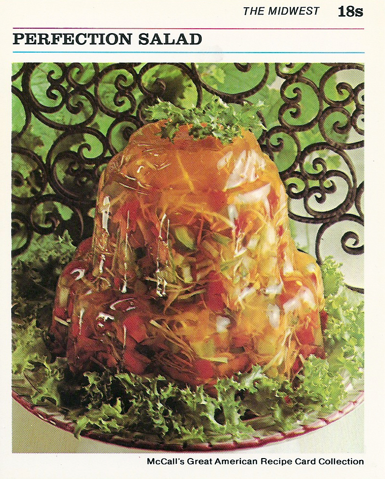

Perfection Salad

A stunning crowd pleaser
Need we say more? Perfection Salad speaks for itself.
Ingredients
Makes 8 servings
- 2 envelopes unflavored gelatine
- 1/2 cup sugar
- 1 teaspoon salt
- 1/2 cup lemon juice
- 2 tablespoons vinegar
- 1 cup shredded carrots
- 1 cup finely shredded cabbage
- 1/2 cup chopped green pepper
- 1 can (4 oz) chopped pimento
- In a small saucepan, combine gelatine, sugar, and salt. Mix well.
- Add 1 cup water. Heat over low heat, stirring constantly until sugar and gelatine are dissolved. Remove from heat.
- Stir in apple juice, lemon juice, vinegar, and 1/4 cup cold water. Pour into medium bowl and refrigerate 1 hour, or until mixture is consistency of unbeaten egg whites.
- Add carrot, celery, cabbage, green pepper, and pimento. Stir until combined.
- Turn into decorative, 1 1/2 quart mold. Refrigerate 4 hours or until firm.
- To unmold: Run a small spatula around the edge of the mold, then invert onto your serving plate. Place a hot dishclth over the mold, and shake gently to release. Refrigerate until ready to serve.
Main